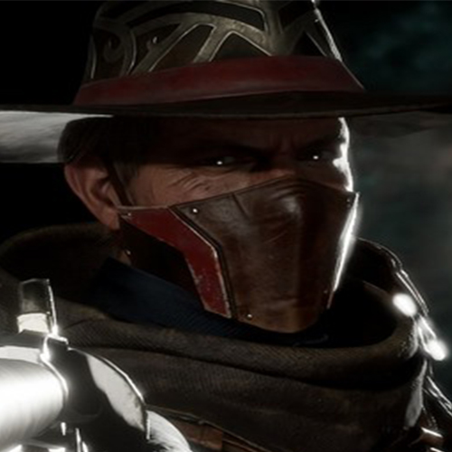

Birdie Character Bio
Stats
- AD: 70 (+7/lvl) -> 238
- AP: 0 (+0/lvl) -> 0
- HP: 586 (+100/lvl) -> 3086
- Mana: 298 (+20/lvl) -> 818
- MS: 340 (+3/lvl) -> 415
- AS: 0.7 (+0.01/lvl) -> 0,95 (Capped to 1.0)
Abilities
Passive: A Hog-Killin’ Time
Erron has 125% damage against enemies below 20% HP.
Q: Coin Flip
[30 mana] [8s cd]
Erron flips a coin (0.5s). Upon activation, there is a [50%] chance that Erron's next basic attack deals [200%] damage. If the double damage is not dealt, it disappears after 2s.
W: Dynamite Throw
[85 Mana] [10s cd]
Erron throws a dynamite in the designated direction, which explodes upon impact and damages affected enemies [100/210/335/400/480/520] + [35/50/80/100/155/200] over 2s and slows them by 35% (1.5s).
E: Shotgun Burst
[85 Mana] [13s cd]
Erron pulls out his shotgun, aims in the designated direction, and damages nearby enemies [70/100/210/300/355/410] and stuns them (0.5s).
R: Sight of Kill
[90 Mana] [140s cd]
Erron takes a huge look in the designated direction, measures the enemy heroes, and after 1.5s, fires his weapon. It deals [380/580/750/1000] damage to every hit enemy. Shots can be blocked by other enemies or walls. An enemy can only suffer damage from one shot.
Talents
Level 1
- a. Basic attacks deal 3% more damage when the enemy's HP is below 50%.
- b. Dynamite Throw increases the slow effect by 10%.
- c. QUEST: Use the double damage of Q 25 times -> The chance increases from 50% to 100%.
Level 5
- a. The first shot deals 6% more damage to all enemies (40s cooldown/enemy).
- b. Dynamite Throw deals 15% more damage.
- c. Shotgun Burst deals 15% more damage if the enemy is under the effect of Dynamite Throw.
Level 10
- a. Enemies hit by R are rooted for 1s.
- b. The charging time of R is reduced by 50% for every killed enemy.
Level 15
- a. When your HP drops below 25%, you resist all negative effects (stun, slow, silence, etc.) for 3s.
- b. If all basic abilities are on cooldown, basic attacks deal 10% more damage.
- c. Erron gets a magic shield that blocks 13% of damage.
Level 20
- a. When your HP drops below 15%, you automatically regain 25% of your health and become immune to damage for 2s (105s cooldown).
- b. R instantly kills enemies below 1200 HP, ignoring shields, damage reduction, etc.
- c. Poison flask (item): When used, affected enemies suffer 10% more damage from anyone for 5s.
- d. Enemies killed by Erron stay dead for an additional 10s.